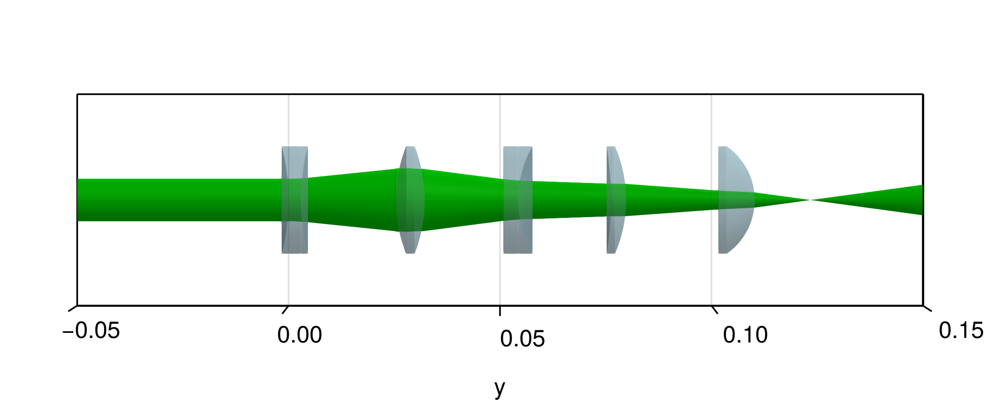

Spherical lens example
This example recreates the figure shown in the Types of elements section of the Optical elements chapter. The lens parameters are taken from the Thorlabs website and are listed below:
First a function is defined that returns the refractive index $n(\lambda)$ for the relevent wavelengths.
using CairoMakie, BeamletOptics
NBK7 = DiscreteRefractiveIndex([532e-9, 1064e-9], [1.5195, 1.5066])Then the different spherical lenses referred to above are generated using the SphericalLens convenience constructor.
# lens diameter
d = BeamletOptics.inch
# lens types
r1 = 34.9e-3
r2 = -34.9e-3
l = 6.8e-3
LB1811 = SphericalLens(r1, r2, l, d, NBK7)
r1 = Inf
r2 = -15.5e-3
l = 8.6e-3
LA1805 = SphericalLens(r1, r2, l, d, NBK7)
r1 = -52e-3
r2 = 52e-3
l = 3e-3
LD1464 = SphericalLens(r1, r2, l, d, NBK7)
r1 = Inf
r2 = 25.7e-3
l = 3.5e-3
LC1715 = SphericalLens(r1, r2, l, d, NBK7)
r1 = -82.2e-3
r2 = -32.1e-3
l = 3.6e-3
LE1234 = SphericalLens(r1, r2, l, d, NBK7)The lenses are then moved into arbitray positions along the y-axis for the showcase. A GaussianBeamlet with $\lambda = 532~\text{nm}$ and $w_0 = 5~\text{mm}$ is used for this purpose.
translate3d!(LD1464, [0, 0*d, 0])
translate3d!(LB1811, [0, 1*d, 0])
translate3d!(LC1715, [0, 2*d, 0])
translate3d!(LE1234, [0, 3*d, 0])
translate3d!(LA1805, [0, 4*d, 0])
system = StaticSystem([
LB1811,
LA1805,
LD1464,
LC1715,
LE1234
])
beam = GaussianBeamlet([0, -0.05, 0], [0, 1, 0], 532e-9, 5e-3)
solve_system!(system, beam)The following code will recreate the figure:
fig = Figure(size=(600,240))
aspect = (1,4,1)
limits = (-0.025, 0.025, -0.05, 0.15, -0.025, 0.025)
ax = Axis3(fig[1,1], aspect=aspect, limits=limits, azimuth=0., elevation=1e-3)
hidexdecorations!(ax)
hidezdecorations!(ax)
render_beam!(ax, beam, color=:green2)
render_system!(ax, system)